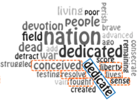

EdWordle: Consistency-preserving Word Cloud Editing


Authors. Yunhai Wang, Xiaowei Chu, Chen Bao, Lifeng Zhu, Oliver Deussen, Baoquan Chen, Michael Sedlmair
Venue. TVCG (2017)
Abstract. We present EdWordle, a method for consistently editing word clouds. At its heart, EdWordle allows users to move and edit words while preserving the neighborhoods of other words. To do so, we combine a constrained rigid body simulation with a neighborhood-aware local Wordle algorithm to update the cloud and to create very compact layouts. The consistent and stable behavior of EdWordle enables users to create new forms of word clouds such as storytelling clouds in which the position of words is carefully edited. We compare our approach with state-of-the-art methods and show that we can improve user performance, user satisfaction, as well as the layout itself.